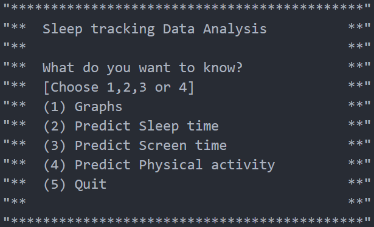

Flowchart of artefact pseudocode:

Design of my Project
- Overview:
- The above flowchart depicts the basic idea of how the artefact will operate.
- Before the user goes to sleep they will record the amount of screen time during that day as well as the amount of physical activity during that day.
- This data will be recorded to a BBC Micro-bit and then uploaded to a computer where a python program will then read in the data and analyse it.
- The python program will prompt the user for what action it wishes to take, it will allow the user to view useful trend graphs of the data
or it will allow the user to make predictions in relation to the data.
- This would meet the Basic Requirement 3: "Create an analysis component that can be used to calculate or predict certain information and
inform future decisions relating to wellbeing. "
- The user should also be able to view the degree of reliability of the predictive model.
- Micro-bit:
- Before the user goes to bed they will activate the Micro-bit and enter both the amount of physical activity they carried out that day and the amount of screen time that day, this data will be recorded using the Data Logger module on the Micro-bit.
- The Micro-bit will record the time at which the user went to sleep and then when the user wakes up they will press a button on the Micro-bit indicating they have woken up and from that the Micro-bit will be able to find the amount of time slept that night.
- The Micro-bit may warn the user if they are exceeding certain thresholds of excessive screen time or lack of sleep or physical activity.
- This would help to satisfy the basic requirement 1: "Create a fully automated embedded system that utilises digital/analogue inputs and
digital/analogue outputs to support the theme of wellbeing.
" as sleep is a vital part of wellbeing and the embedded system outlined above would use digital inputs and outputs.
- Once the user wishes to view the data they can download the csv file from the Micro-bit to their computer and then use the python prorgam to analyse it.
- This meets Basic Requirement 2: "Validate and store the data gathered from the embedded system. "
- Python program:
- The python program will use the csv module to read in and format the recorded data from its csv file.
- The modules numpy and pandas will be used to help organise and format the data for the graphs and for the predictive model.
- The program will prompt the user for its desired action.
- Example:

- The user will then input the number of their desired action and the program will execute it.
- The user will be able to view different graphs based on data recorded from the user in relation to their sleep.
- The library Matplotlib will be used to output these trend graphs.
- A variety of predictions will be made by the program using a Linear Regression Model similar to a line of best fit function, this will be done through the library Scikit-Learn or sklearn.
- Graphical Interface:
- If I have time left over after the statistics and moddeling portion of the project is completed I plan to implement these in a Graphical User Interface
- In order to do this I plan to use customtkinter, a third party python library based on the built in library tkinter, I have chosen this module as I find it has the ease of use of tkinter yet has far more pleasing aesthetics than the basic tkinter library.